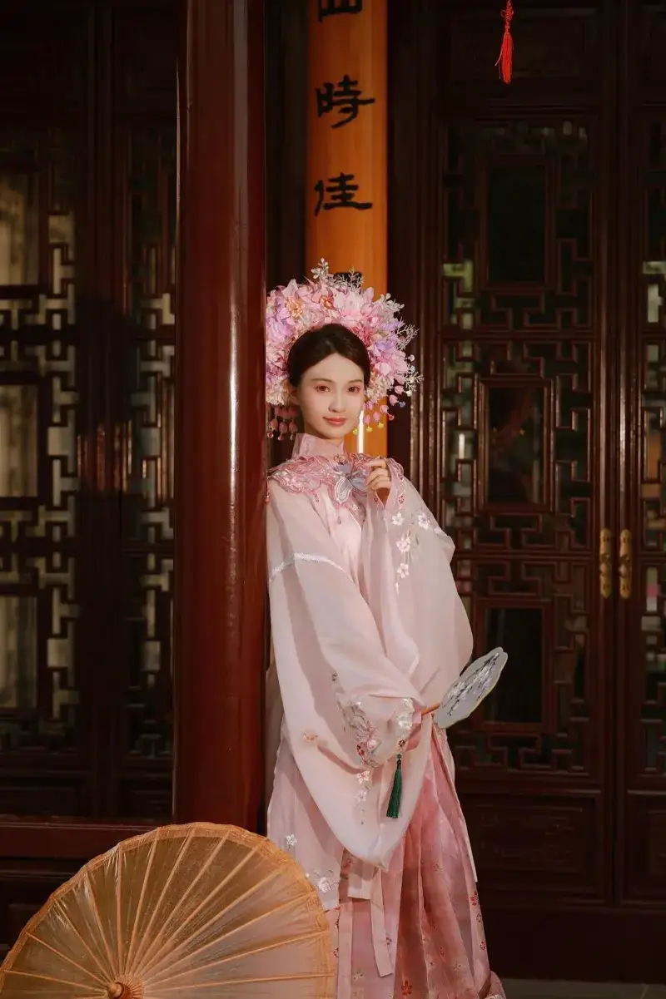
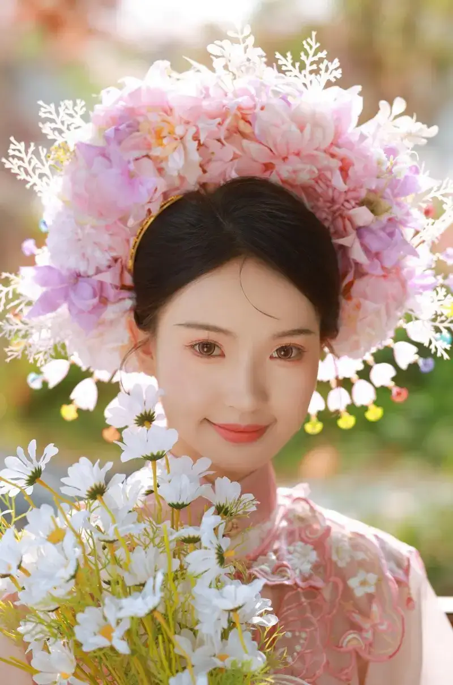
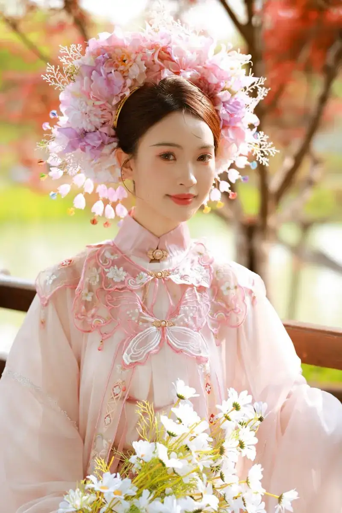
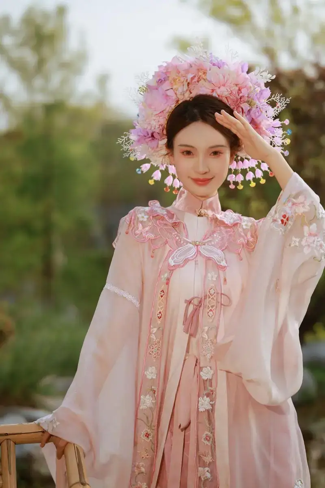
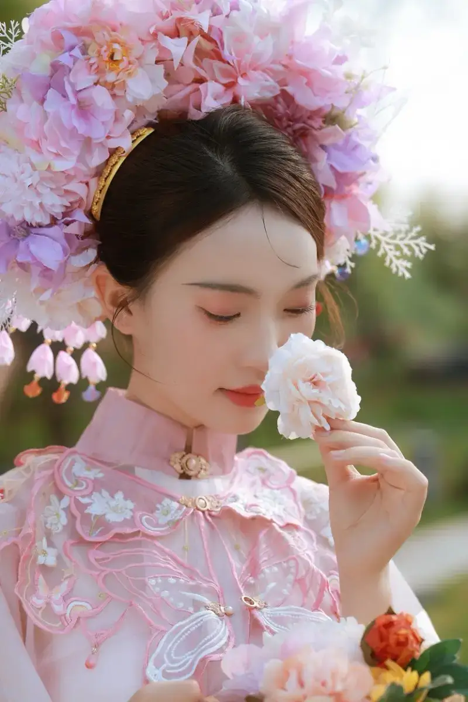
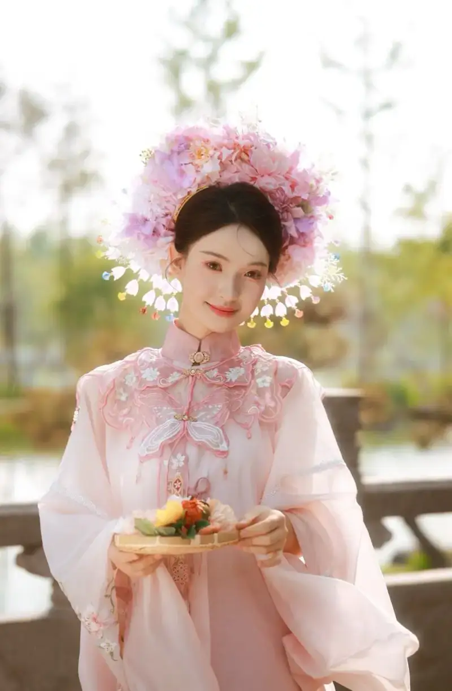

Published: 2024-05-21
Original link: https://www.cnphotos.net/academy/show-174.html
Hefei, also called Luzhou, is the capital of Anhui province in China. It is a city with a rich history. Hefei is not a tourist city, but it still has many places to eat, drink, have fun, and take check-in photos. Here I have put together a few distinctive spots. I will also tell you what style of check-in photo suits each place.

The first spot I recommend is the Hefei Luogang Garden Expo Park. The garden exhibition area is perfect for the very popular flower-hairpin style. The best time to shoot here is between 3 and 4 in the afternoon, before the sun sets. You can get a nice yellow glow, and the person looks more beautiful against the sunlight.

For gear, I used a Canon EOS R6 Mark II with an RF85 F1.2 DS lens. Because backlight can happen during the shoot, the wide dynamic range of the R6 II handles it easily. This keeps the rim light on the person and still gives good detail. As for skin tone, you can fully trust Canon's color. Together with the high resolution of the lens, it makes the skin in these portraits look natural and good, and the frame looks clear.

I chose the RF85 F1.2 DS because it is not only the classic portrait focal length. For portraits, it keeps the cluttered background away as much as possible. The large F1.2 aperture also makes the background blur very soft and natural. My copy has a DS coating, which makes the background blur even smoother.

Since this is the flower-hairpin style, be sure to bring small props. A fan, a flower basket, or an oil-paper umbrella all work. This keeps the person from looking stiff and makes the pose more natural and good-looking.

For posing, you can tilt your head and smile, and look at the camera in a natural way. You can also arrange the flowers in the basket so the photographer can catch you, or lift the fan and peek out with a smile. Use these ways to face the camera naturally, and show your best side to the lens.
Do not worry about focus. The face detection of the R6 II is very accurate. When you shoot on the fly, set detection to portrait mode, and it will lock onto the person's eyes or body on its own. You only need to mind the composition and set the person's mood, and you can take good photos.

Besides the Garden Expo Park, Hefei has a few other distinctive spots for photos.
1. Kaifu Temple
Kaifu Temple sits at the foot of Dashu Mountain. It is very easy to reach. It is called the 'Little Forbidden City of Hefei.' It is very large, and the temple has a rich old charm. It is perfect for costume-style photos, and the pictures come out very well.
2. Hechai 1972
This is a cultural and creative park converted from an old prison. In 1972 it became the Hefei Diesel Engine Factory. Now it is a new check-in landmark. It holds many buildings from different eras. They feel strongly of their time and have a weathered artistic feel. Here you can take moody portrait photos and travel check-in photos.